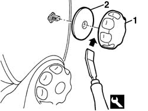
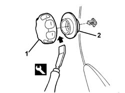

7045A25 squab lumbar knob - r r
- Path
- Procedures > 70 FITTINGS > 7045 FRONT SEATS > 7045A front seat assembly > 7045A25 squab lumbar knob - r r
- Kind
- repair procedure (removal / refitting; the operation number is the code)
- Applies to
- all engines; all production periods
- Interactive page
- https://sloeber94.github.io/elrnDB-a156/en/#/3238866
Applies to: all engines; all production periods
 Removing
Removing
 Refitting
Refitting1. Remove the knob using the special tool.
 | Name | Country |
|---|---|---|
1 | Scraper blade | 1.823.014.000 |
2. Remove the support washer.

Applies to: all engines; all production periods
Refitting
RemovingCheck that the knob is not damaged.
Refit the support washer.
Fit the knob.
Line up the reference.
Check that the lumbar adjustment is working properly.
Applies to: engines: 3.2 V6; all production periods; only with equipment: GTA
Removing
Refitting1. Remove the knob using the special tool.
| Name | Country |
|---|---|---|
1 | Scraper blade | 1.823.014.000 |
2. Remove the support washer.

Applies to: engines: 3.2 V6; all production periods; only with equipment: GTA
Refitting
RemovingCheck that the knob is not damaged.
Fit the support washer.
Fit the knob.
Line up the reference.
Check that the lumbar adjustment is working properly.
Topics that link to this page (10)
- O10 FRONT SEAT LUMBAR ADJUSTMENT NOT WORKING
- S65 SEATS CREAKING
- 5580C92 connecting lead in seat for side air bag module r r
- 7045a38 device for driver`s seat squab lumbar adjustment - r r with seat removed
- 7045A39 device for driver`s seat squab lumbar adjustment - r r
- 7045A80 front seat cushion squab (outer) joint assembly - r r with seat removed
- 7045A82 front seat cushion/squab (interior) joint assembly - r r with seat removed
- 7045A85 Front seat BACKREST COVER, left or right - R.R.
- 7045A88 Front seat BACKREST UPHOLSTERY, left or right - R.R. with seat removed
- 7045A89 Front seat BACKREST UPHOLSTERY, left or right - R.R .